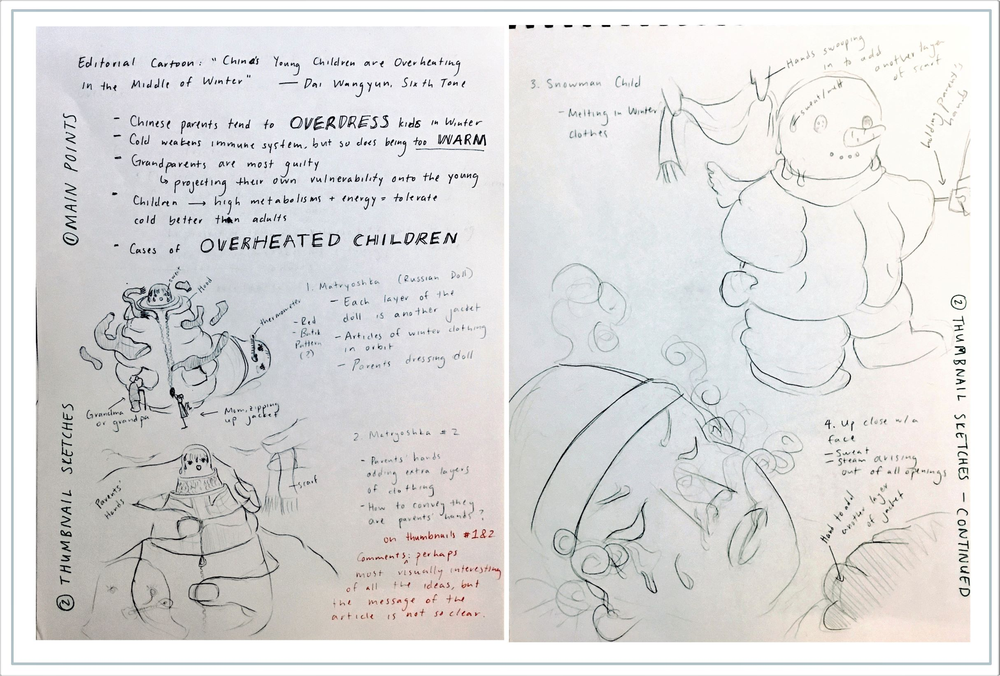
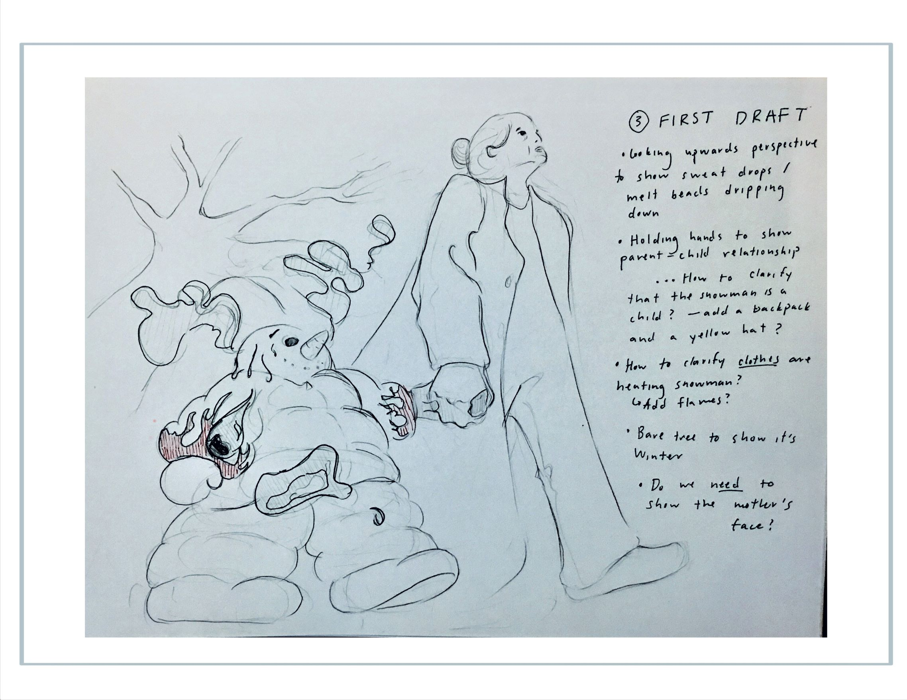

This editorial illustration is based on Sixth Tone’s article China’s Young Children Are Overheating in the Middle of Winter" by Dai Wangyun. It’s about how concerned parents tend to overbundle their kids in winter clothes. When I read the article, the first image that came to mind was a Russian doll, with each layer of the doll as another jacket. I got pretty attached to the idea, but after some more thinking, I decided a melting snowman would get the point across better, even if it’s not as visually interesting.
From there I began to fine-tune the draft. I really tried to apply a design mindset to this project, taking into consideration how perspective, colors, detail, etcetera would all contribute to the message of the drawing.
For example: